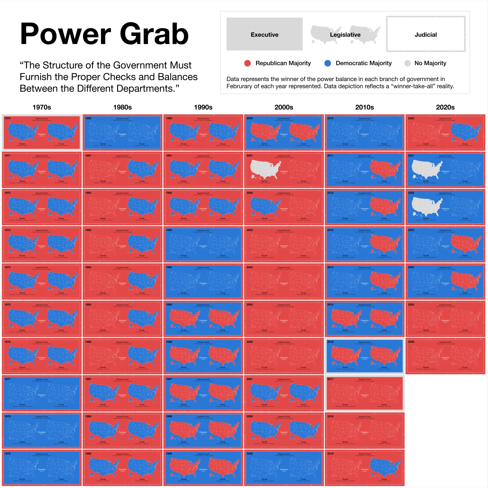

Select any image to open it at full size.
Which party held each branch of the US government, every February from 1970 to 2026? Each year is one panel, in a column for its decade.
Red is a Republican majority, blue a Democratic one, and gray means no majority. Each branch is shown winner-take-all.